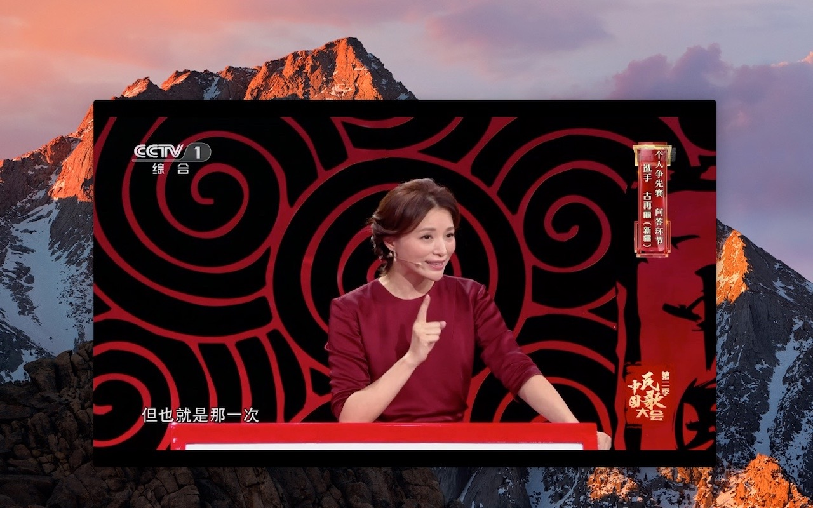

广播电视直播源Player

iPad/iPhone版本，已经两次审核被拒，因无法提供版权，上线希望已经很小。
审核被拒很正常，只可惜，各种努力都付之东流了。
其实，新年第一天，就出现了意想不到的事情，用了八年的新浪博客被封了，
未告知原因，确实让人有些伤心，因从未想到会被封，技术博文连备份都没有。
从1号开始到3号，总算把App的支持链接全部转移到了新网页。
哎，真有点累，心也累。。。
本App几个关注点的说明
（1）流畅性的问题
首先，是否流畅与网络、源稳定性、软件处理能力等相关。专门进行过验证测试，
发布在新浪博客上，可惜被封，没有备份。与专业VLC播放器进行比较，并未发现
明显的差异。目前，源地址文件里包括一些稳定流畅的源就是一个很好的说明。
（2）源文件定制问题
本App的特点是什么？其实就是源的自定制，许多源有效期都很短，一夜之间，
数百流畅的源就可能失效，要等到App更新才能替换失效的源，黄花菜都凉了。
但是，源文件定制对一些用户来说，也确实是一道难题。甚至觉得自己找源是一个
极大的负担，习惯于软件里有什么就看什么。根据直播源时效性强的特点，源定制
才是唯一可行的办法。否则，大部分时间或许都在等待软件更新。对于习惯于自由
定制源的用户，源地址不能随时替换才是一大灾难。
注意：
（1）某些源地址有效期很短，可按小时计算有效期，请主动搜寻新源替换失效源。
（2）不保证全部直播源都流畅、有效。
（3）新增源一般情况放在前面，但有时也根据源的类别放在已有同类源的位置。
（4）请根据自己的喜好进行分类整理。
（5）发现有流畅的好源会尽快上传，但无法保证经常更新。
2018年01月05日更新：去掉一些失效的源。
2018年01月03日更新：好不容易找的天元围棋和网络棋牌只用了两天就失效，哭。
2018年01月02日更新：在myTVsrc.txt中增加NewTV系列直播源及多个电影频道。
2018年01月01日更新：增加天元围棋和网络棋牌两个直播源。
https://yutianjian.github.io/CCTV/myTVsrc.txt.zip
返回